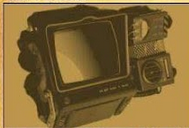

Llega el Parche de Inventario
Esto nuevo parche llega a Fallout 76
paa ayudar a oganizar mejor
nuestro nventario entre otras cosas.
A contimuación las novedades mas
importantes:
Aumento del alijo, de 800 a 120o.
Nuevas pestañias en el Pip-Boy
ahora armaduras y atuendos están
por separado y comıda y bebida
están separadas de ayuda, lo cual
agilizará mucho la busqueda de
nuestros objetos
incorpora la pestaña "nuevo" donde
Tambiense
encontraremos los últmos ítems
recogidos en la sesión actual
ordenados en el orden en el que se
recogen.
Nueva función "peso apilado" nos
muestra la el peso total de un item
que tengamos en cantidad Tip
atentos con los items de ayuda y
comida y bebida, que suelen ser los
que mas se acumulan sin darse
cuental)